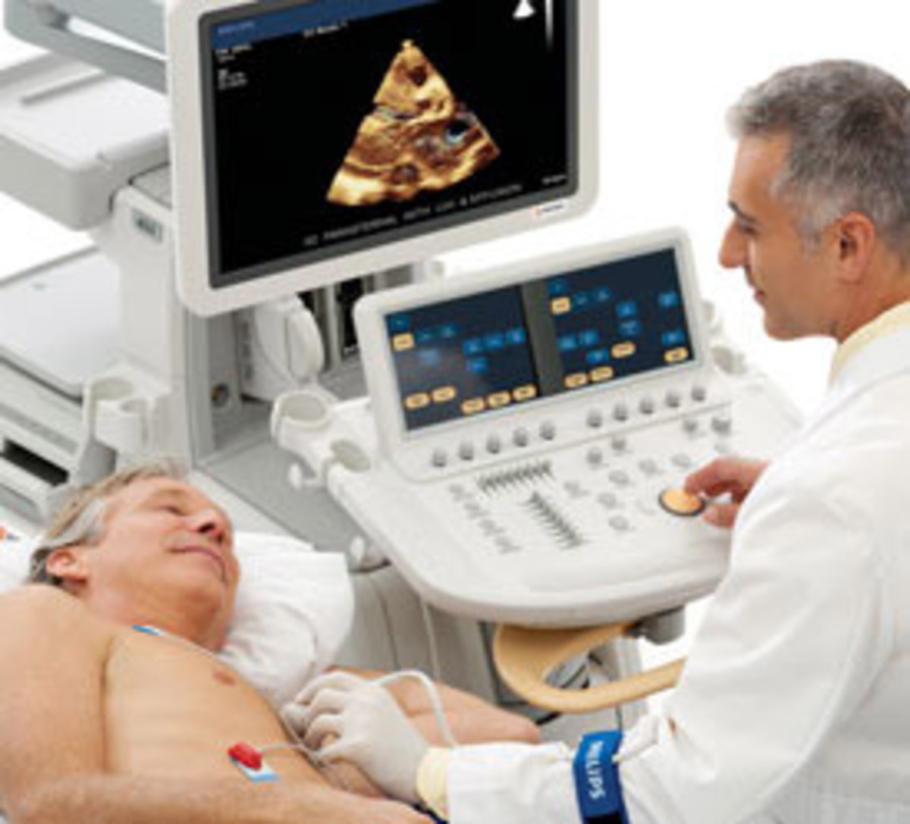
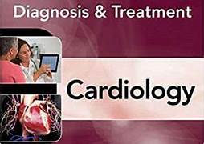

Treatments to be provided for Cardiovascular health
Many different tests are used to diagnose heart disease. Besides blood tests and a chest X-ray, tests to diagnose heart disease can include:
- Electrocardiogram (ECG or EKG).
- Holter monitoring.
- Echocardiogram.
- Cardiac CT scan
- Cardiac MRI scan.
- Angiography.
Electrocardiogram
Holter monitoring:
A Holter monitor is a portable ECG device that's worn for a day or more to record the heart's activity during daily activities. This test can detect irregular heartbeats that aren't found during a regular ECG exam.

Echocardiogram
Cardiac CT scan:
A computerized tomography (CT) scan combines a series of X-ray images taken from different angles around your body and uses computer processing to create cross-sectional images (slices) of the bones, blood vessels and soft tissues inside your body.
A CT scan has many uses, but it's particularly well-suited to quickly examine people who may have internal injuries from car accidents or other types of trauma.

MRI Scan
Medicines for Cardiovascular disease
Taking preventive measures and adopting a heart-healthy lifestyle can significantly reduce the risk of cardiovascular diseases.
Here are some tips:
- ACE inhibitors
- Aldosterone inhibitors
- Angiotensin II receptor blockers (ARBs)
- Cholesterol-lowering drugs
- Inotropic therapy

ACE Inhibitors
Aldosterone inhibitors:
Aldosterone inhibitors are a class of medications that affect the secretion of fluid and the retention of salt in the kidneys. This class of medication often is prescribed to control blood pressure.
Aldosterone is a signaling hormone which binds to a protein receptor in the kidneys. Once bound, the aldosterone/receptor complex signals to increase the production of ion channel proteins in the kidneys. More channels mean that more sodium and water are retained from urine before it is excreted. The same pumps that remove sodium from the urine excrete potassium at the same time, so aldosterone receptors also cause an increase in potassium excretion.
Aldosterone inhibitors block the function of aldosterone by binding to the aldosterone receptor, which means that the receptor is not available to bind aldosterone. By blocking the binding of aldosterone to its receptor, the amount of water and sodium excreted by the kidneys is increased, and potassium is retained.

Angiotensin II receptor blockers
Cholesterol-lowering drugs:
Statins are drugs that can lower your cholesterol. They work by blocking a substance your body needs to make cholesterol.Lowering cholesterol isn't the only benefit associated with statins.
These medications have also been linked to a lower risk of heart disease and stroke. These drugs may help stabilize the plaques on blood vessel walls and reduce the risk of certain blood clots.
Types of cholesterol-lowering drugs include:
- Statins.
- PCSK9 inhibitors.
- Fibric acid derivatives (also called fibrates).
- Omega-3 fatty acids and fatty acid esters.
- Adenosine triphosphate-citrate lyase (ACL) inhibitors.

Inotropic therapy

Treatments
Electrocardiogram:
An electrocardiogram records the electrical signals in the heart. It's a common and painless test used to quickly detect heart problems and monitor the heart's health. It can tell if the heart is beating too fast or too slowly.

Holter Monitoring
Echocardiogram:
This noninvasive exam uses sound waves to create detailed images of the heart in motion. It shows how blood moves through the heart and heart valves.
An echocardiogram can help determine if a valve is narrowed or leaking.Your health care provider can use the pictures from the test to find heart disease and other heart conditions.
Other names for this test are:
- Heart ultrasound.
- Heart sonogram.

CT Scan
Cardiac MRI scan:
A cardiac MRI uses a magnetic field and computer-generated radio waves to create detailed images of the heart.Most MRI machines are large, tube-shaped magnets. When you lie inside an MRI machine, the magnetic field temporarily realigns water molecules in your body.
Radio waves cause these aligned atoms to produce faint signals, which are used to create cross-sectional MRI images — like slices in a loaf of bread.
Medicines
ACE inhibitors:
Angiotensin-converting-enzyme inhibitors (ACE inhibitors) are a class of medication used primarily for the treatment of high blood pressure and heart failure.This class of medicine works by causing relaxation of blood vessels as well as a decrease in blood volume, which leads to lower blood pressure and decreased oxygen demand from the heart.
ACE inhibitors inhibit the activity of angiotensin-converting enzyme, an important component of the renin–angiotensin system which converts angiotensin I to angiotensin II and hydrolyses bradykinin.

Aldosterone Inhibitors
Angiotensin II receptor blockers (ARBs):
Angiotensin II receptor blockers help relax your veins and arteries to lower your blood pressure and make it easier for your heart to pump blood.
Angiotensin is a chemical in your body that narrows your blood vessels. This narrowing can increase your blood pressure and force your heart to work harder.
Their main uses are in the treatment of hypertension (high blood pressure), diabetic nephropathy (kidney damage due to diabetes) and congestive heart failure. They selectively block the activation of the AT1 receptor, preventing the binding of angiotensin II compared to ACE inhibitors.

Cholesterol Lowering Drugs
Inotropic therapy:
Inotropic therapy is an infusion of medication that changes your heart’s calcium level, which helps make your heart muscle contract. The therapy can be used to slow your heart rate for better control of arrhythmias, or it can trigger stronger muscle contractions to relieve symptoms from conditions such as heart failure.
Our Advanced Heart Failure Program is one of the select programs that uses inotropic therapy as an in-home management for patients with end-stage heart failure. We also integrate our treatment with palliative care services to provide you with personalized pain management during treatment. Stop the infusion and call your doctor right away if you experience side effects such as:
- Irregular heartbeat.
- Pain near the IV.
- Fever over 101 degrees Fahrenheit.
- Pump malfunction.